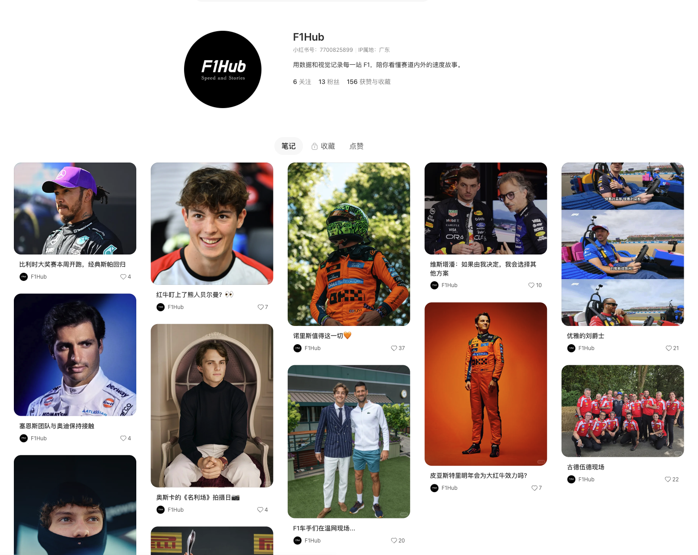
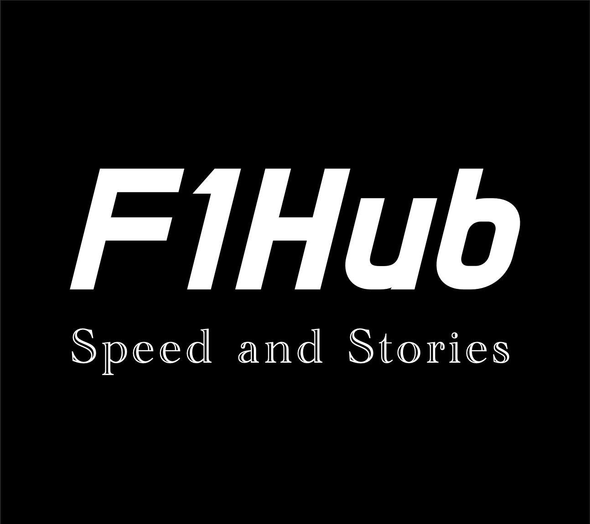
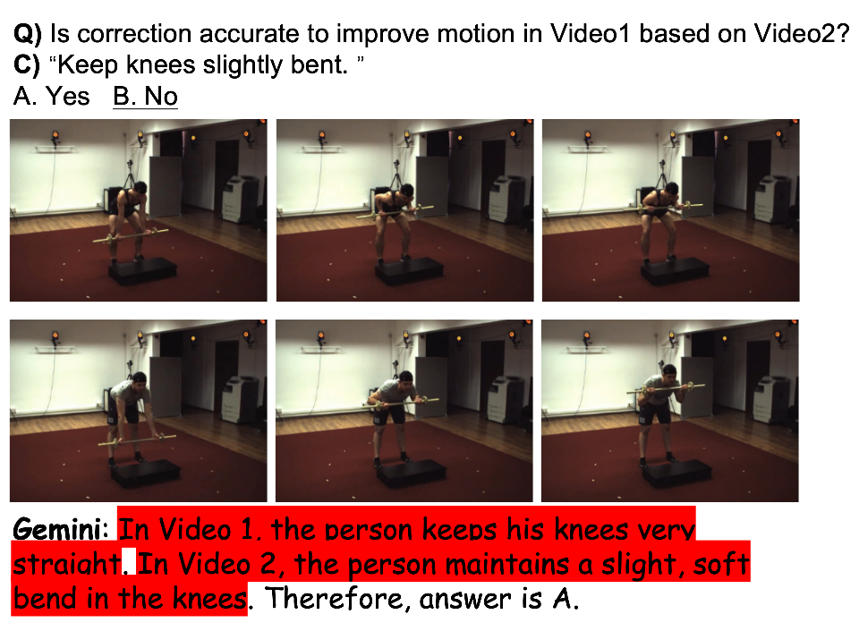
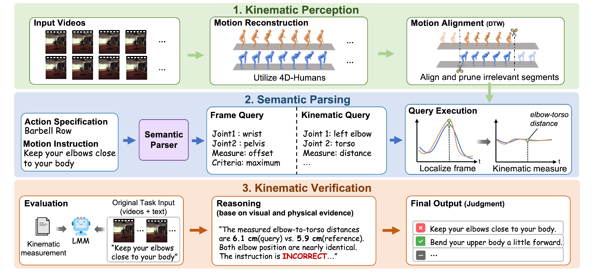
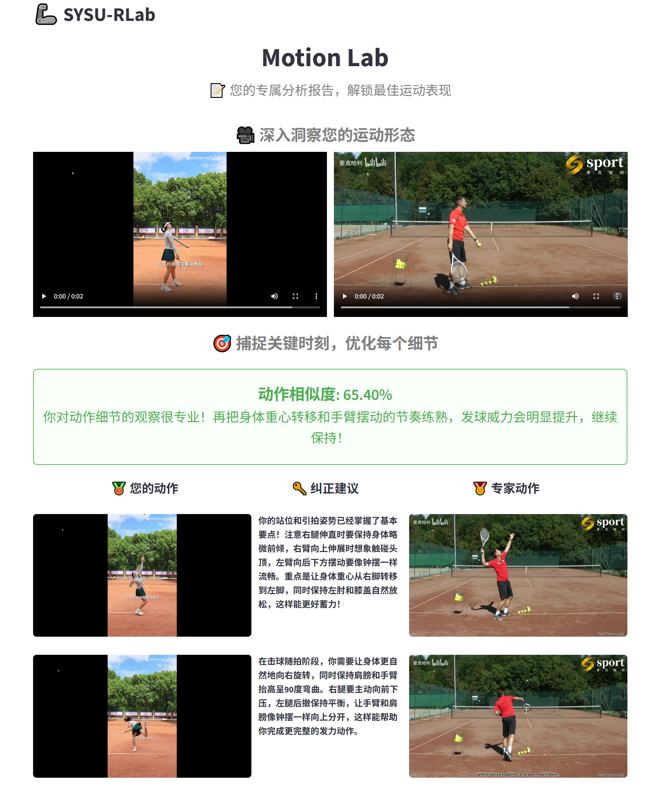

I am a second-year master student in the School of Computer Science and Technology at Sun Yat-sen University, advised by Prof. Chao Yu. I received my B.Eng. degree from Huazhong University of Science and Technology (HUST) in 2023.
Beyond research, I enjoy building practical projects and exploring AI-driven development workflows. In my free time, I enjoy cycling, watching movies, and exploring good food.
I have been serving as an AI Application Engineer intern at Huawei from July 2026 to present.
My research interests lie in multimodal large language models, computer vision, and multimodal reasoning. Currently, I focus on fine-tuning and enhancing multimodal large models for motion understanding and reasoning tasks, with particular interests in hallucination mitigation, physics-aware reasoning, and vision-language alignment. I am also interested in building reliable multimodal AI systems that bridge visual perception and structured physical knowledge for real-world applications.


AI-assisted F1 Content Operations Pipeline Weile Guo. Personal project, 2026.06 Xiaohongshu link
Built an AI-assisted F1 Chinese content operations pipeline from product requirements to an end-to-end MVP. I analyzed the content workflow and split it into two production paths: an automated OpenF1 data line for race and session reports, and a keyword-driven Agent line for controversy tracking and topic exploration. The system combines FastAPI, Postgres/pgvector, APScheduler, a Vite React review console, Playwright-based rendering, and Feishu notifications to turn structured data and editorial intent into reviewable social media drafts.


Fine-grained Motion Reasoning and Hallucination Mitigation for Multimodal Large Language Models Weile Guo. Manuscript in submission, 2026.04 https://arxiv.org/abs/2606.23061
This project focuses on reducing hallucinations in multimodal large language models for motion-related reasoning tasks. I built a benchmark from carefully aligned motion-capture videos and fine-grained question-answer pairs, and designed a training-free enhancement framework that converts video pixels into structured skeletal motion sequences. By guiding the model to reason over physics-aware motion cues, the system improves reasoning accuracy and makes multimodal output more reliable in real-world scenarios.
Developed an agent-based sports coaching system that combines multimodal video comparison, DTW-based motion alignment, and tool-augmented reasoning to generate explainable motion correction feedback. The Agent autonomously verifies uncertain predictions using skeletal measurement tools and evidence-based reflection, improving correction accuracy by 5% while reducing false correction rates by up to 47.5% across evaluated VLMs.

AI-based Motion Diagnosis and Visual Reporting System Weile Guo. On-campus project, 2025.08
This project aims to automatically compare student movements with expert demonstrations and generate actionable correction feedback. I developed an end-to-end pipeline that performs pose sequence extraction, temporal alignment, key-frame analysis, textual correction generation, and visual report rendering. The system supports fast review of motion differences and provides a clear, interpretable output for teaching and self-correction.
Vision-based UE Interactive Fitness Game Weile Guo. Undergraduate thesis, 2023.05 Watch Demo Video
This project explores camera-based human-computer interaction for fitness gaming without wearable devices. I independently designed a modular system that links pose recognition with the game engine, enabling real-time motion input through body keypoints extracted from video. The prototype supports multiple interaction modes and game features, demonstrating the feasibility of vision-driven interactive gaming with stable real-time performance.
Thanks to Jon Barron for open-sourcing the page, see source code.
Last updated:
{kind=link}